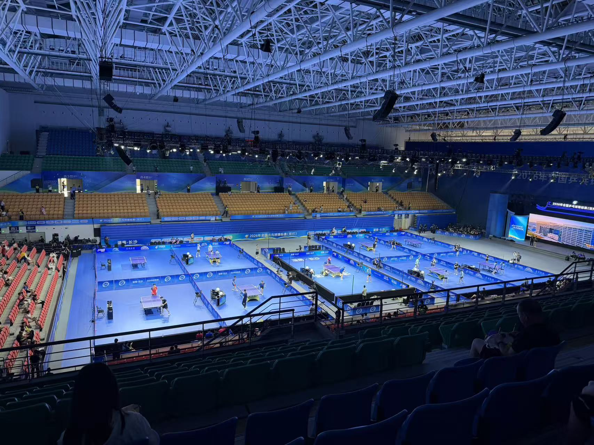
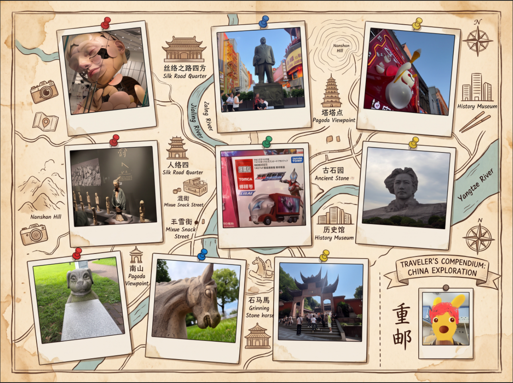

欢迎进入

董奕铭的主页
重庆邮电大学 · 通信工程本科
表面上是个“正经”的理工男，
其实是带大家平稳通关大一的靠谱队友。
刚上大一，大家都在适应大学的节奏。我主打一个情绪稳定、拒绝内卷。高数听得像天书？大物学得怀疑人生？没关系，咱遇到难题一起查资料、抱团取暖。我绝对是最愿意陪大家一起通关大学副本的人，让我们彻底告别军训时的心理阴影！
与其纸上谈兵，不如动手折腾。
我平时最大的爱好就是折腾各种提升效率的新工具。最近的对AI方面学习也是让我对世界有了全新的看法。不管是做出高颜值的 PPT，还是自己敲代码做个可交互的小游戏，目前比较火的 AIGC 大模型都能很大程度上提高我们工作的效率和质量。我相信：掌握了高效的工具，就能在大学里拥有‘合法外挂’。现在，我想把这些外挂转化为咱们班的生产力。
我能为你们做什么
主打一个实用、省心、绝不内卷
作业交期提醒员
课表变动？临时换教室？不知道明天早八在哪上？不用翻群聊记录，直接来问我。我随时随地把全班的上课节奏和交作业时间刻在脑子里，绝不让大家跑错教室、漏交作业。
期末重点收集站
平时悄悄搜集各科老师的 PPT 和往届学长学姐的复习重点，目前也正在学习笔记软件，尽量能帮大家整理出结构化的知识网络。到了期末季直接共享“救命压缩包”，绝不藏私，陪大家一起平稳过考。
师生沟通小帮手
刚进大学，大家难免会遇到不好意思跟老师开口、或者不知道怎么跟辅导员沟通的尴尬情况。不用担心，交给我！无论是帮大家向老师反馈学习上的意见，还是日常的上传下达、协调沟通，我都非常乐意当咱们班的“首席润滑剂”，确保大家的诉求都能顺畅传达。
我的兴趣与日常

【期末解压搭子】
只要学到破防，随时找我去球馆出出汗，物理超度焦虑。
【用脚步丈量地图】
